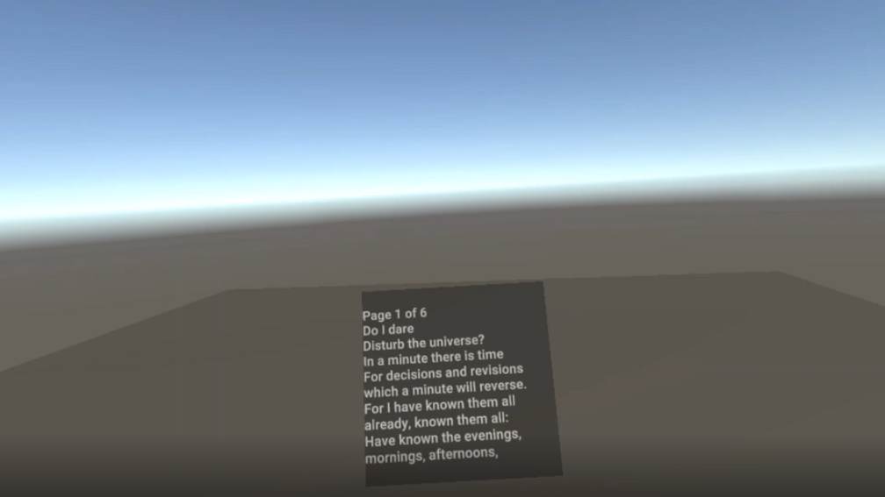
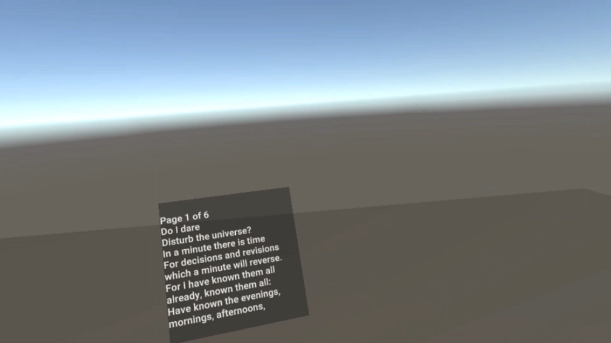
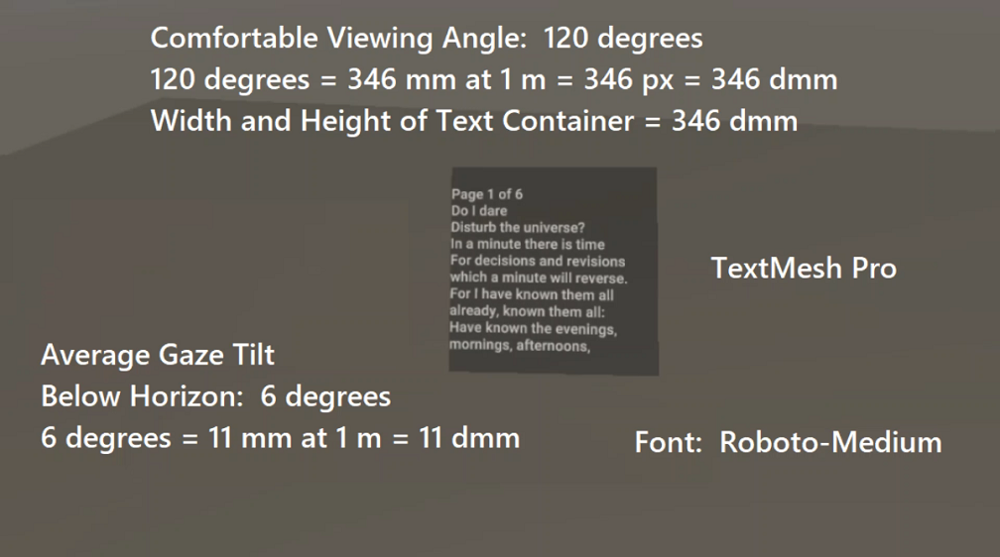
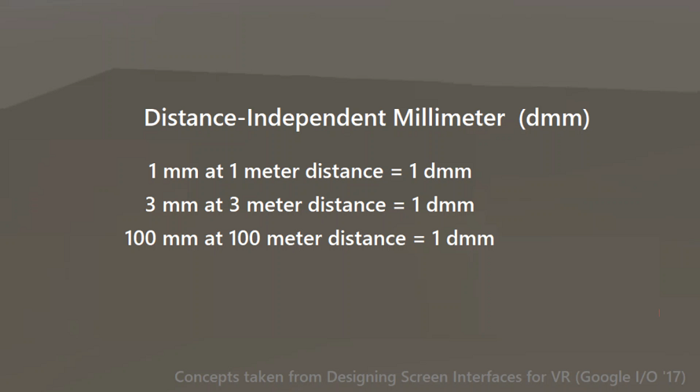
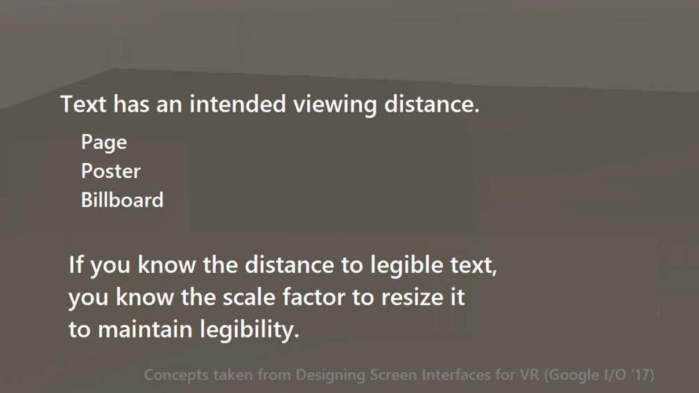

Principled Text Viewing
in VR
Capstone Project
Basic to interaction in Virtual Reality is the need to read text, but reading text is often a challenge in VR. Often times a user must contort or move in order to read a piece of text. Sometimes the text must be moved or reoriented by the user. My capstone project in the XR Terra AR & VR Developer Certificate Program was an exploration to address the difficulties of reading text in VR, by uncovering and implementing principled ways of supporting reliable text viewing in VR.
Many factors affect a user's ability to read in VR. These include resolution, distance, orientation of the text, orientation of the user, size of the text, font choice, contrast with the background, color, reading angles, and required movement by the user. Ignoring these factors can create illegible text, discomfort for the user, and a lag in the user attempting to read.
Virtually Reality experiences do not universally suport easy reading of moderate-to-long passages. What can be done to improve the experience of reading in VR?
Whether text is at a far distance like a billboard, a medium distance like a sign, or a close distance like a document, users want it readable. Users could be given the choice to scale the text to the most comfortable size for reading. The text can maintain the same angular size independent of distance.
Users are able to read text passages of certain widths/angles simply by moving their eyes, without moving their necks or bodies. The width of a text passage can be controlled to minimize unintended movement.
Users comfortably tilt their heads down while reading, with their eyes slightly titled up; generally averaging about six degrees below the horizon. Text can be angled for actual reading posture.
In traditional text media like books, users turn pages once in a while. Electronic 2D media often requires the user to scroll a long passage. It is possible to eliminate the need for scrolling in VR that requires grand body movements, and minimize learned gestures. Text can be parsed into readable chunks, and paged forward or backward by a single squeeze of the left or right hand respectively. Essentially a slight squeeze can "turn a page". Displaying a page count is important so users know how far they are into a passage. Scrollbars do generally have the advantage of giving a user a sense of placement in a passage.
In VR, we have the ability to change the rules of reality. Rather than requiring the user to move or to move a piece of text to read, we can have the text always face the user.
When using Unity to create Virtual Reality experiences, it is best to use TextMesh Pro (TMP). Any font can be converted into a TextMesh Pro asset in Unity. This creates a high resolution font atlas, and uses SDF rendering to provide clear characters across a wide range of scaling. Choosing a easy to read font, and a relatively simple topography, like roboto yields good results.
Color of the font and background should contrast to aid readibility. With nearly 10% of the population having color blindness, grayscale is a generally good choice, of course there is research and opinions. From samples of other VR experiences, light gray on dark gray was comfortably readable. It was chosen
Comfortable reading of medium-to-long passages of text may be faciliated by having text maintain the same angular size independent of distance, face the user, adopt a comfortable tilted viewing angle, and have a limit of the angle/width of a passage to eliminate unnecessary neck and body movements. TextMesh Pro text, with a good font choice, and comfortable color contrast keeps text easy to read. Implementing a means of paging text to minimize unnecessary movement and gestures is useful for allowing a person to read without too much movement.
To save on processing and posssible flicker, updating the angular size should only be done when there is a significant change in distance, which experientially seems to be about .1 meters. Similarly having the text face the user need only be updated when the user moves significantly. Adjusting the tilt of the text can be done when there is a significant change in the head up/down movement.
Accomplishments
- Researched, designed, and developed a functional demonstration of the above findings in Unity for the Oculus Quest
- Text scales based on distance from the text
- Text always faces the user
- Text assumes a comfortable reading tilt
- Text angle and scale update only after significant user movement
- The width of the text body is within an angle of minimal neck movement
- Text is TextMesh Pro, roboto with a font atlas of a high resolution, and grayscale
- Text is presented as pages, with a page count and total, requiring simple squeezing of left and right hand controllers to change a page
- A user can comfortably read medium-to-long passages of text in this manner
Media
Text is always legible
Text always faces the user
Present text at appropriate angles and font
Distance-Independent Millimeter
Text scales to maintain legibility